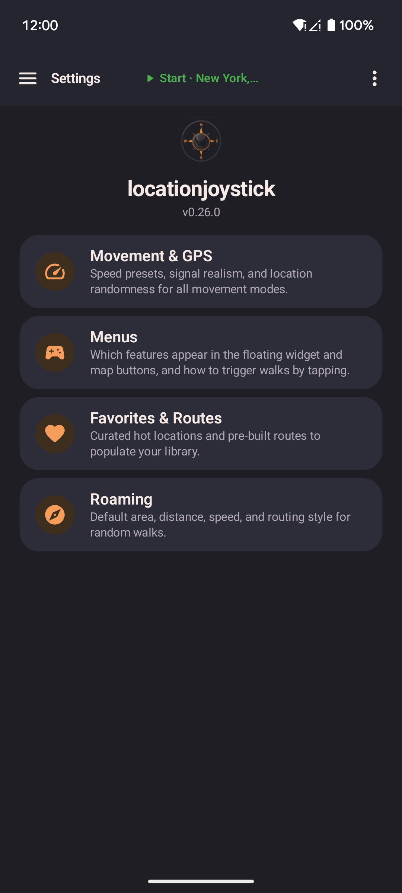
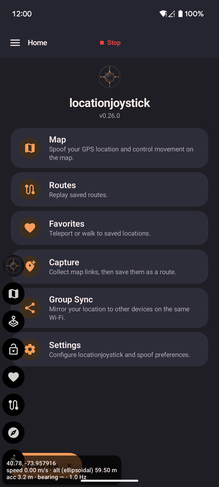

Settings
Every setting, grouped as in the app. Export, import, and reset are on Backup & Transfer. For permission problems, see Troubleshooting.
Movement & GPS · Menus · Language · Favorites & Routes · Roaming · External services · Home screen badges

Movement & GPS
Speed profiles
Edits apply at once, even during movement. The km/h ↔ mph switch changes every speed in the app. There is no upper limit. Speeds below 0.04 km/h are raised to 0.04 km/h, because zero blocks movement.
| Profile | Default | What it does |
|---|---|---|
| Slow Walk | 1.1 km/h | Strolling. Off in the Speed cycle. |
| Walk | 2.0 km/h | Regular walking pace. |
| Run | 8.0 km/h | Jogging. Follows footpaths when Follow roads is on. |
| Bike | 15.0 km/h | Cycling. Follows bike lanes when Follow roads is on. |
| Drive | 54.0 km/h | Driving. Off in the Speed cycle. Above the anti-cheat limit below. |
Walk, Run, and Bike are in the Speed cycle by default. Slow Walk and Drive are not.
Anti-cheat warning
Speeds above 28.8 km/h (17.9 mph) show this message: "Speed exceeds 8 m/s, may trigger anti-cheat in some games". It is a notice only and changes nothing.
Location randomness
Small random changes to each location update, like real GPS drift. Set a value to 0 to turn it off. Wobble and altitude show in feet when you use mph.
| Option | Default | What it does |
|---|---|---|
| Wobble when still | 0.8 m | Largest random shift while you stand still. Maximum 50 m. |
| Wobble while moving | 0.3 m | Largest random shift while you move. Keep it below the still value. Maximum 50 m. |
| Max step per tick | 1 m | How far the shift can change in one update. Allowed range: 0.1 to 5 m. |
| Speed wobble when still | 5% | Random percentage added to or taken from the reported speed at rest. 0 looks perfectly still. |
| Speed wobble while moving | 5% | Random percentage added to or taken from the reported speed while you move. Allowed range: 0 to 50%. |
| Idle wobble frequency | 15% | How often the speed shows a small wobble at rest. 0 means never. 100 means every update. |
| Vary altitude (m) | 1.5 m | How much the reported height moves. 0 gives a flat height. Shows only while Vary altitude is on. |
GPS realism
Each option copies real GPS behavior, to avoid detection by app checks.
| Option | Default | What it does |
|---|---|---|
| Hold bearing when stationary | On | Keeps your last direction when you stop, instead of snapping back to north. |
| Vary altitude | On | Moves the reported altitude slightly. The Vary altitude (m) value above sets how much. |
| Use real-world elevation | On | Looks up the real ground height at your fake location every minute, instead of a fixed 35 m. Needs internet. Falls back to 35 m if the lookup fails. Pauses while an altitude override is set. |
| GPS warm-up simulation | Off | Starts each session with low accuracy that improves over about 30 seconds. |
| Realistic satellite count | On | Reports 7 to 14 visible satellites, and 6 to 12 in use. |
| Simulate signal dropouts | Off | About every 10 seconds, the signal freezes for about 2 seconds. Most apps show the freeze. Does not run during route playback or walk-to. |
Location memory
| Option | Default | What it does |
|---|---|---|
| Remember last location | On | Restores your last fake position when you reopen the app. Starts from your real location if nothing is saved. |
Menus
Appearance
| Option | Default | What it does |
|---|---|---|
| Light mode | Off | Switches the app and widget lists from dark to bright. Overlay buttons stay dark. |
Map source
| Option | Default | What it does |
|---|---|---|
| Map source | OpenStreetMap | OpenStreetMap or Amap (高德). Amap is faster in mainland China. The app corrects its coordinate shift automatically. |
Place search
At least one service must stay on. If one cannot be reached, the app tries the next one that is on.
| Option | Default | What it does |
|---|---|---|
| Nominatim (OpenStreetMap) | On | The main search service. Turn it off if it is slow or blocked where you are. |
| Photon (Komoot) | On | The backup search service. Works well from mainland China. |
App Features
Choose which quick-access features appear in the floating widget and on the map screen. Each feature has one checkbox for the widget and one for the map. Drag the handle to reorder. Both use the same order. Starting and stopping simulation is always available from the top bar.
| Feature | Icon | What it does |
|---|---|---|
| Map shortcut | 🗺️ | Widget only. A small map over your current app. |
| Show/hide joystick | 🕹️ | Widget only. Shows or hides the joystick. |
| Lock joystick | 🔒 | Widget only. Keeps the joystick's direction after you let go. Tap again to unlock. |
| Favorites | ❤️ | Widget and map. Your favorites, with teleport and walk. |
| Routes | 🗺 | Widget and map. Your routes. |
| Roaming | 🧭 | Widget and map. Walk around the block and Planting. On by default. |
| Search | 🔍 | Map only. Search for a place by name. |
| Paste coordinates | 📋 | Map and widget. Off by default. See Map. |
| Capture coordinates | 📍+ | Opens from Home or the side menu. Off by default. See Location Links. |
| Speed cycle | ⚡ | Widget only. One tap switches to the next enabled speed. |
Speed cycle
Choose which speeds the widget's Speed cycle button cycles through. Each speed in Speed profiles has one checkbox.
Tap to Walk
Turns on the crosshair overlay and sets its map scale and compass. See Overlays.
Privacy
| Option | Default | What it does |
|---|---|---|
| Hide teleport features | Off | Removes every "jump to location" option: map, favorites, routes, Group Sync, and paste. Routes walk to the first stop instead. |
| Hide floating widget | Off | Keeps the widget button off the screen while spoofing is on. Other overlays keep working. |
| Hide notification icon | Off | Removes the "Mock location active" status bar icon. The notification stays in the shade (Android requires it). |
| Show route jump buttons | Off | Adds "Previous stop" and "Next stop" buttons while a route plays. Hidden when Hide teleport features is on. |
| Floating map quick walk | Off | A tap on the floating map walks there at once, with no popup. See Overlays. |
| Show altitude override button | Off | Adds a widget button to type a fixed height. See Overlays. |
Capture
Finishes the one-time Capture setup, turns Capture on or off, and sets the browser. It can also restore your usual default browser. You can also pick an app to open after a map link is handled. See Location Links.
Debug stats

Shows coordinates, speed, altitude, accuracy, heading, and update rate in the expanded widget. Off by default.
Language
The app supports English, Simplified Chinese (CN), and Traditional Chinese (TW).
| Android version | How to change |
|---|---|
| Android 13 and newer | Phone Settings → Apps → locationjoystick → Language. The app switches at once. |
| Android 9 to 12 | Settings → Menus, then pick a language from the menu in the top bar. The app restarts. |
On Android 9 to 12, overlays and the notification use the new language the next time a session starts.
Want to help translate? See the Contributing guide or ask in the Discord.
Favorites & Routes
| Option | Default | What it does |
|---|---|---|
| Show hot locations | Off | Adds popular places around the world to your favorites. Turning it off removes only those entries. See Routes & Favorites. |
| Show hot routes | Off | Adds ready-made routes for popular event locations. Turning it off removes only those routes. See Routes & Favorites. |
Roaming
Defaults for Walk around the block and Planting.
| Option | Default | What it does |
|---|---|---|
| Walk around the block — Radius | 500 m | The farthest distance from the start that random stops can land. Maximum 100 km. |
| Walk around the block — Route distance | 1 km | The total distance to walk. Allowed range: 50 m to 50 km. |
| Walk around the block — Speed | Walk | Starting speed. The roaming sheet offers Walk, Run, and Bike. Settings also offers Slow Walk and Drive. |
| Follow roads | On | Walk around the block only. Follows walkable paths. Uses straight lines if the road service is unavailable. |
| Return to start | On | Walk around the block only. Walks back to the starting position when the walk ends. |
| Planting — Starting radius | 5 m | How close to the center the spiral starts. |
| Planting — Ending radius | 39 m | How far out the spiral opens before it tightens again. Maximum 200 m. |
| Planting — Speed | Bike | Starting speed: Walk, Run, or Bike. Separate from the Walk around the block speed. |
| Planting — Infinite loop | On | Repeats until you stop. Turn it off to set a loop count from 1 to 99 (default 1). One loop is one full expand and tighten. |
Once roaming starts, changing speed in the app or widget overrides the starting speed.
External services
The app is offline-first and needs no account. Each service is used only while its feature is active.
| Service | When used | What is sent |
|---|---|---|
| Road routing (OSRM) router.project-osrm.org |
Routes and roaming that follow roads. | The coordinates of your stops or random roaming targets. Nothing that identifies you or your device. |
| Place search (Nominatim) nominatim.openstreetmap.org |
Place search in the route creator and favorites map picker, when you type a search and the setting is on. | The text you type. No coordinates and nothing that identifies you. |
| Place search backup (Photon) photon.komoot.io |
Place search and place-name lookup when the main search cannot be reached or is off. | The text you type, or the coordinates of the spot you look up. Nothing that identifies you. |
| Map images (OpenStreetMap) tile.openstreetmap.org |
Whenever you move or zoom a map. | Only which part of the map to show. No personal data. |
Home screen badges
| Badge | Shows when | Dismiss by |
|---|---|---|
| Update available | GitHub has a newer release. Checked once a day. Needs internet. | Tap X. Hidden until a newer version comes out. |
| What's new | After an update, showing what changed. Works offline. | Tap X. Hidden until the next version. See the changelog. |